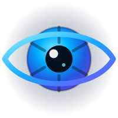

Toque em Iniciar para começar.
O guia a pé indica as esquinas, as distâncias em metros e em passos, e avisa quando há travessia. Ele nunca diz que é seguro atravessar: quem decide a hora de atravessar é você, com a bengala, o ouvido e o semáforo.
Complemento à bengala e ao cão-guia, nunca substituto. O app informa a cor do semáforo que enxerga, mas não indica a hora de atravessar. Nenhuma imagem sai do aparelho.